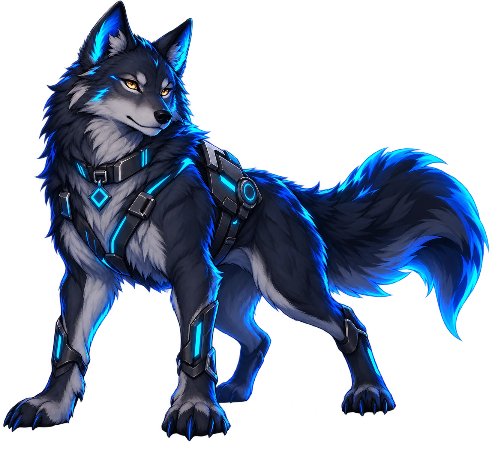

01 / Lead response · Local MVP
LeadFlow
A new lead shouldn't get lost
between “hello” and “booked.”
A lead-management tool for local service businesses. Capture quote requests, qualify the lead, draft a reply, and keep the next follow-up in view.
What works today?
The local MVP includes a public quote-request form, rule-based scoring, response drafts, pipeline statuses, an activity log, and a follow-up queue. Automatic SMS/email sending and booking integrations are future additions, not included capabilities.

LEADFLOW COMPANION Wolf concept
Try the LeadFlow demo
INTERACTIVE SAMPLE
From inquiry to next action.
Change the request and see how the MVP scores it. Sample data only. Nothing is stored or sent.
—/ 100 Awaiting sample
Run the sample to see qualification and a response draft.
Follow-up appears after qualification.